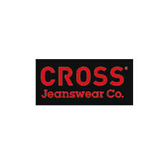
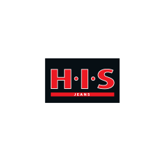
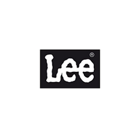
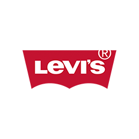

ÜBER UNS

Wir lieben Jeans. Und wir lieben es, die richtige zu finden.
Jeans sind unser Geschäft. Menschen sind der Grund, warum wir es gern machen.
Seit mehr als 30 Jahren dreht sich bei Hamburg Homely Jeans alles um Denim. Um klassische Schnitte, neue Lieblingsstücke und die eine Jeans, die einfach passt. Als lokales Fachgeschäft setzen wir auf das, was den persönlichen Einkauf ausmacht: Erfahrung, eine sorgfältige Auswahl und eine Beratung, bei der du im Mittelpunkt stehst. Wir möchten nicht, dass du irgendeine Jeans mit nach Hause nimmst. Wir möchten, dass du eine findest, die zu dir passt – zu deinem Körper, deinem Alltag und deinem Stil. Dafür sind wir da.
Erfahrung, die man an der Passform merkt.
Jeans ist nicht gleich Jeans. Zwei Modelle in derselben Größe können ganz unterschiedlich sitzen. Eine andere Leibhöhe, eine veränderte Beinweite oder ein anderes Material machen oft den entscheidenden Unterschied. Genau hier kommt unsere Erfahrung ins Spiel.
Wir helfen dir, dich in der Vielfalt der Modelle zurechtzufinden, geben Orientierung und zeigen dir Alternativen, an die du vielleicht noch gar nicht gedacht hast. Manchmal ist es der Schnitt, manchmal die Größe und manchmal einfach das richtige Modell, das den Unterschied macht.
Unser Anspruch: ehrliche Empfehlungen und eine Jeans, mit der du dich wohlfühlst.
Verwurzelt in Hamburg. Offen für deinen Stil.
Hamburg ist vielfältig – und genauso unterschiedlich sind die Menschen, die bei uns einkaufen.
Die einen suchen eine klassische Jeans für jeden Tag. Die anderen möchten einen neuen Schnitt ausprobieren oder endlich ein Modell finden, das in einer besonderen Länge erhältlich ist. Wir begegnen jedem Wunsch mit Offenheit und Fachwissen. Ohne komplizierte Modebegriffe, ohne unnötigen Druck und ohne das Gefühl, sich erst auskennen zu müssen.
Du bringst deinen Stil mit. Wir bringen unsere Jeans-Erfahrung mit.
Warum wir auf den Laden setzen.
Eine Jeans lässt sich online schnell auswählen. Ob sie wirklich passt, zeigt sich aber oft erst beim Anprobieren. Im Geschäft kannst du unterschiedliche Schnitte direkt vergleichen, den Stoff fühlen, dich bewegen und herausfinden, worin du dich am wohlsten fühlst. Dazu kommt die persönliche Beratung: Wir hören zu, stellen Fragen und helfen dir, die Auswahl einzugrenzen. Für uns ist das kein Extra. Es ist der Kern dessen, was ein gutes Jeansfachgeschäft ausmacht.
Unsere Überzeugung: Lieber passend als beliebig.
Eine Jeans soll nicht nur im Spiegel gut aussehen. Sie soll sich auch im Alltag bewähren. Deshalb achten wir gemeinsam mit dir auf Passform, Tragegefühl und Vielseitigkeit. Eine Jeans, die du gern trägst und zu vielen Gelegenheiten kombinieren kannst, wird schnell zu einem festen Bestandteil deiner Garderobe.
Wir glauben an Kleidung, die zu dir passt – und an Beratung, die dir hilft, genau das zu finden.
Schön, dass du da bist. Lerne uns persönlich kennen und besuche Hamburg Jeans in Wandsbek.
[Unseren Store entdecken]
Unsere Partner
|
|
 |
|
|
 |
 |
 |
|
|
|
|
|
|
|